We show a gallery of images from ParaView (paraview.org) after loading in a .vtk file dumped from a cc3d sim (Abbas's sim).
But first, here's an image of the simulation under study as shown in cc3D:
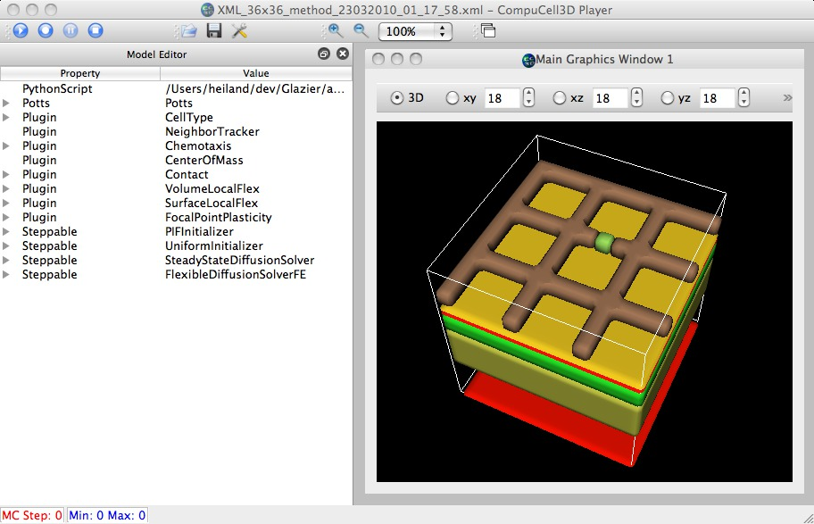
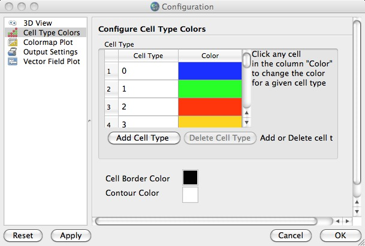
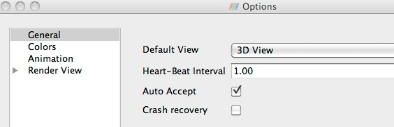
Important to turn on 'Auto Accept' in Prefs/Options for interactive vis
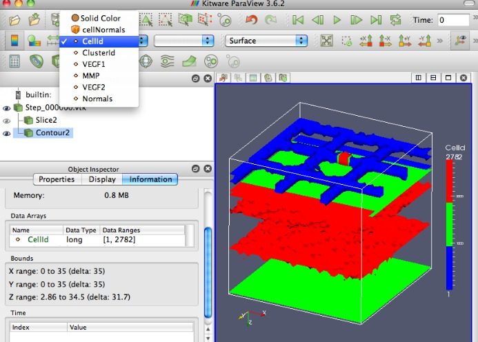
We extract a *single* contour (value=6) and color it by the cellId field. Note that using the default Contour filter is *not* what's typically wanted for cc3d; rather, we want vtkDiscreteMarchingCubes. This filter would need to be imported (presumably, as easy as writing some XML to do so). The colormap is a widget which can be interactively moved/resized.
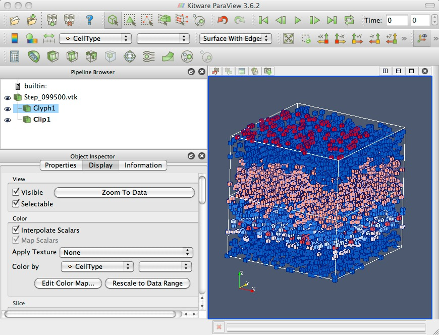
Using glyphs to display cell types field. Glyphs displayed as surfaces with edges.
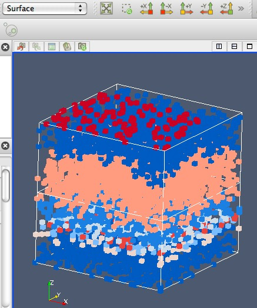
Glyphs displayed as surfaces (without edges).
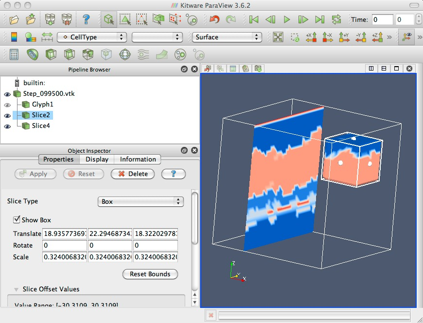
Using "slices" (can select from Plane, Box, Sphere); can be orthogonal or not.
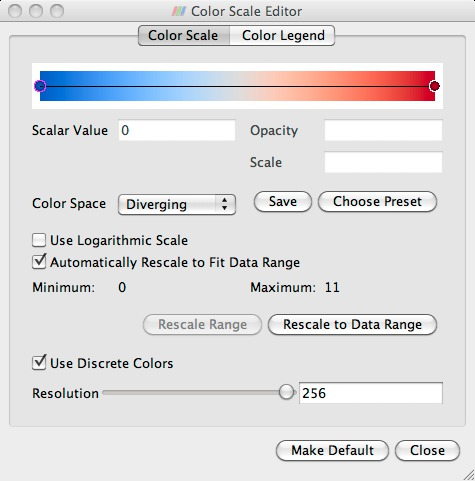
Editable colormap
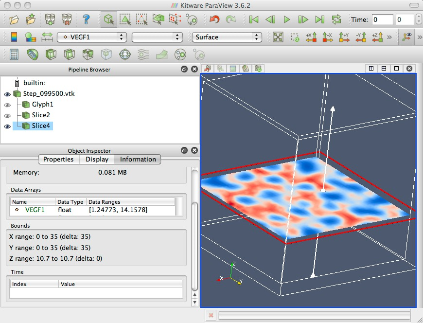
After clicking 'Rescale to Data Range'
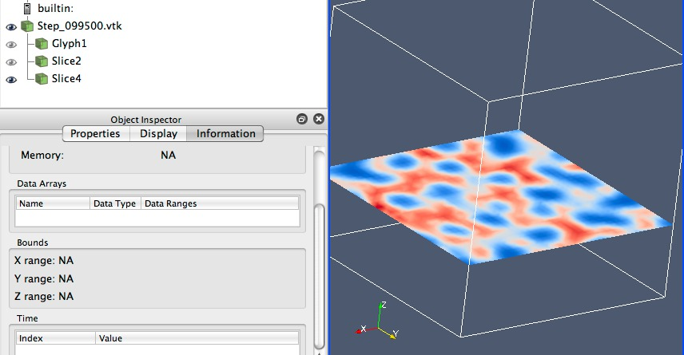
Clicking in white space of pipeline browser deselects object.
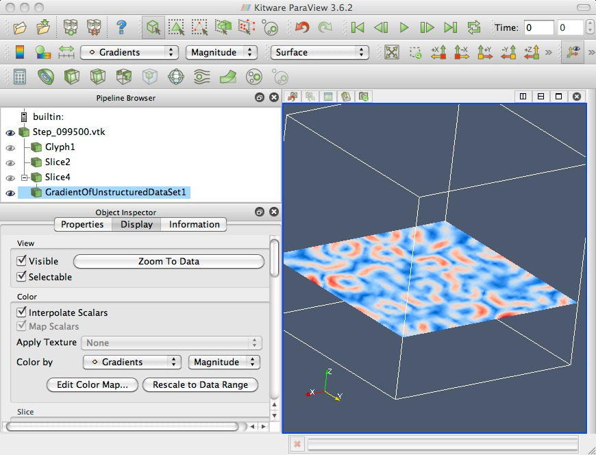
Gradient magnitude of VEGF1 slice (gradient computed via central differences)
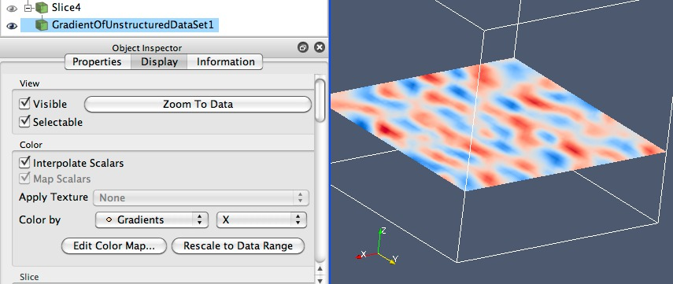
Gradient in X-direction (can select axis) of VEGF1 slice
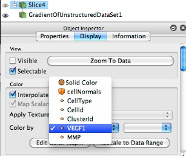
Not sure why VEGF2 doesn't appear in list of fields.
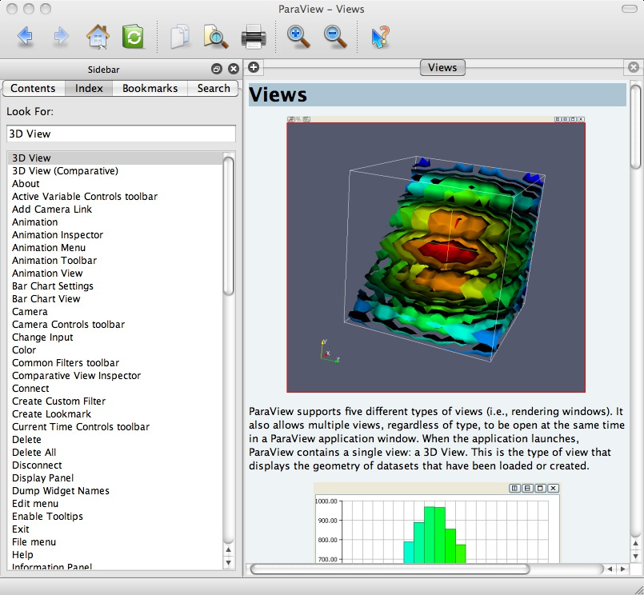
Has embedded Help.